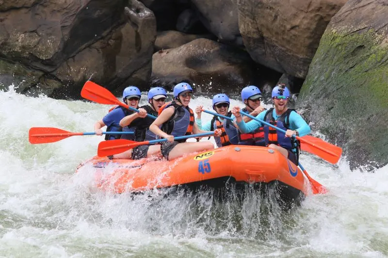
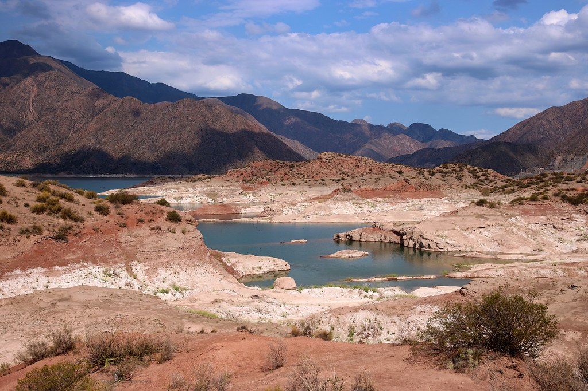
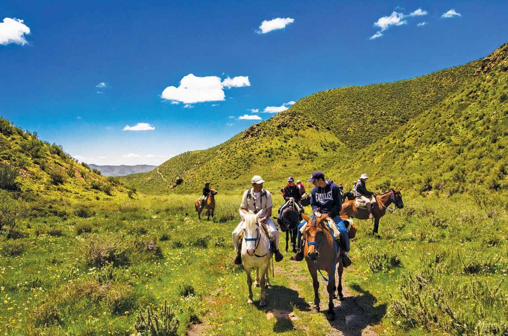
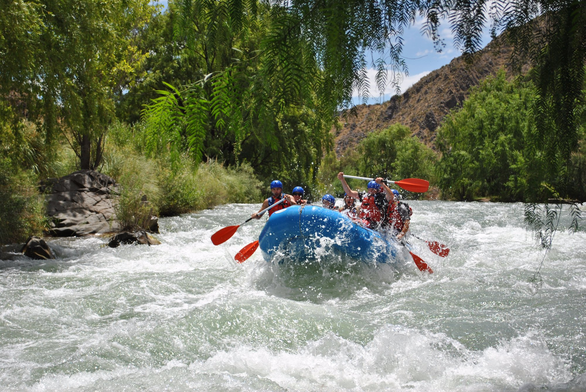
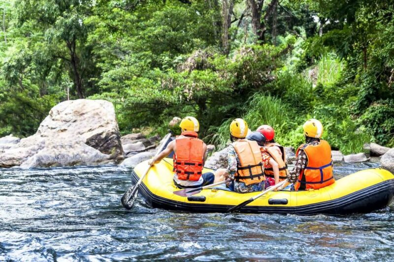

The river is fed by melting snow from the high Andes.
Experince Whitewater Rafting in Mendoza

Navigating the rapids of the Mendoza River with the backdrop of the Andes.
Mendoza River provides Class IV rapids fueled by 'glacial milk'—that’s water with finely ground rock flour from the mountains.
The river flow is dictated by the Isotherm. If the "freeze line" in the mountains stays high, the river gets wilder earlier in the spring.
What to Expect
Cold, fast-moving Class III and IV rapids and a very "rugged" mountain vibe.
The "Potrerillos Class III"

A 12km dash through the heart of the Mendoza River Canyon.
This section features Class III rapids like 'The Labyrinth' and 'The Dog’s Tooth.' You’ll experience 'Standing Waves'—stationary waves formed when fast water hits a submerged rock, creating a beautiful study in Hydrostatic Pressure.
Advertised as the "All-Rounder." It’s perfect for those who want a face full of 10°C water but still want to be back in time for a Malbec tasting.
The "Full Day Expedition"

A massive 20km to 30km journey that takes you deeper into the Pre-Precordillera mountains.
You’ll navigate the changing Gradient. As the river drops in elevation, the potential energy of the water converts into kinetic energy, creating faster 'Chutes' and deeper 'Holes' (recirculation zones).
Advertisements call this "The Full Immersion." It usually includes a riverside asado (barbecue) at the halfway point to refuel your glycogen levels before the afternoon rapids.
The "Sunset Rafting"

Navigating the rapids as the sun dips behind the $6,000\text{-meter}$ peaks of the Cordon del Plata.
This is all about Atmospheric Optics. The dust from the dry Mendoza air creates a 'Rayleigh Scattering' effect, turning the sky—and the white foam of the rapids—into shades of deep violet and orange.
Pitching this as the "Romantic Adrenaline" option. It’s quieter, the wind dies down, and the river feels like a silver ribbon cutting through the shadows.
The "Rafting + Canopy" Combo

Hit the water in the morning, and fly over it in the afternoon.
You move from Hydrodynamics to Aerodynamics. After paddling through the river's 'Shear Stress,' you’ll clip onto a zipline to experience 'Gravitational Acceleration' across the canyon.
The "Gravity Junkie's Dream." You get to see the river's 'meander patterns' from a bird's-eye view after fighting them at eye level.
Gear Checklist
The Paddle Command: Listen for the guide's "Forward Hard!"—this is to ensure your boat has enough Momentum to break through the 'Hydraulic Jump' (the wave at the bottom of a drop).
The Wetsuit Physics: Neoprene works by trapping a thin layer of water against your skin. Your body heat warms that water, creating a Thermal Barrier. It’s basically a personal radiator!
UV Warning: You are at high altitude ($1,200\text{m}+$). The water reflects double the UV radiation onto your face. Polarized sunglasses with a strap are a scientific necessity.